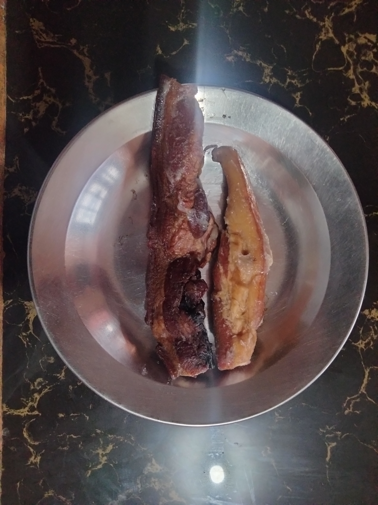
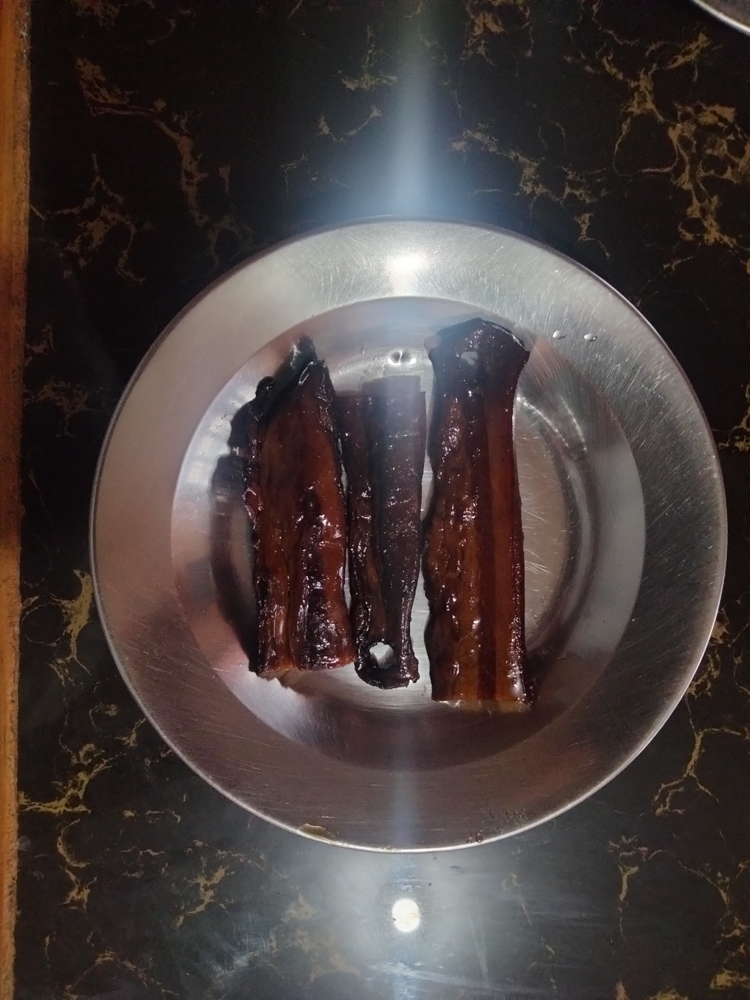
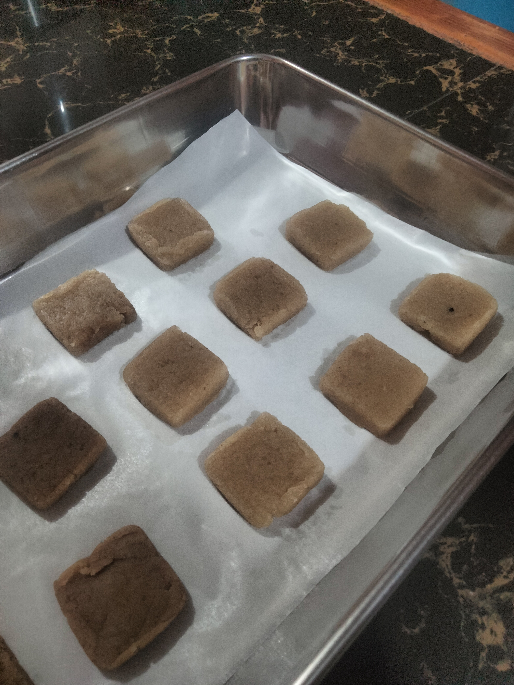
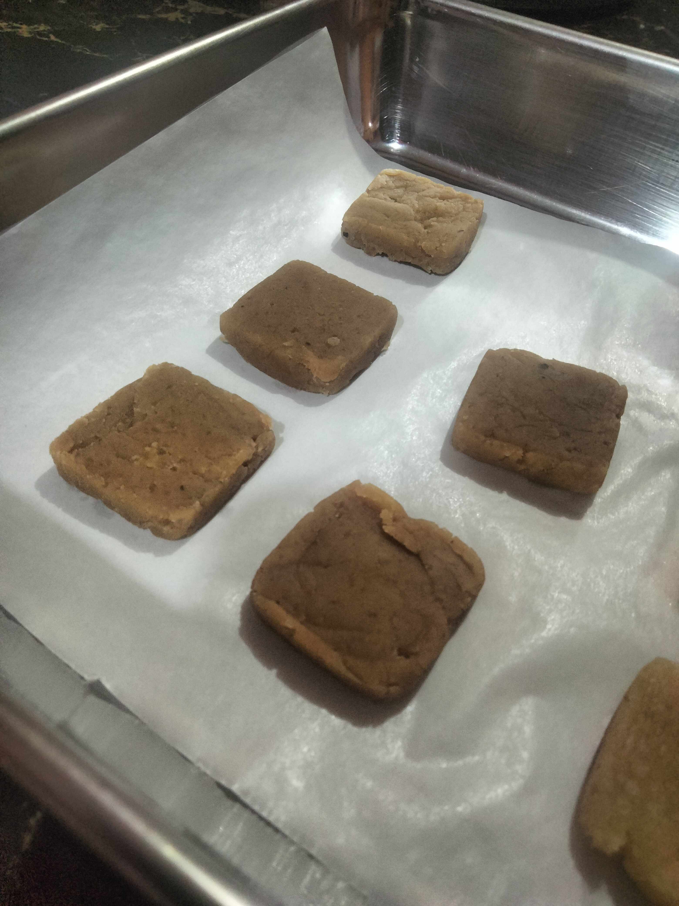

Have you ever looked at a traditional food and wondered if it could be transformed into something more modern and convenient? That question inspired our Science Investigatory Project. As students living in a community where preserved meats are commonly enjoyed, we became curious about whether Etag and Kiniing could be processed into seasoning cubes. These traditional foods are known for their rich, smoky, and salty flavors, and we wanted to find out if their distinct taste could be preserved in a cube form that is easy to use in everyday cooking.


Before starting our experiment, we conducted research about traditional preserved meats and how seasoning cubes are produced. We studied food processing techniques and proper sanitation practices to ensure that our methods were safe and systematic. After gathering enough information, we prepared all the necessary materials, including meat samples, measuring tools, containers, molds, and other ingredients needed for the mixture.
The experiment began with cleaning and cooking the etag and kiniing to extract their flavor components. After extracting the concentrated flavors, we mixed them with other ingredients to create the seasoning cube mixture. We carefully heated and stirred the mixture until it reached the desired consistency, then poured it into molds and allowed it to cool and solidify.
During our first trial, the cubes turned out slightly soft, which meant the texture was not ideal. Instead of giving up, we adjusted the heating time and repeated the process. We also experienced uneven solidification, but we solved this by stirring the mixture more thoroughly and ensuring stable cooling conditions.
After several attempts, we successfully produced seasoning cubes made from etag and kiniing extracts. The cubes had a distinct smoky aroma and a savory flavor that clearly reflected the taste of the original preserved meats. Our observations supported our hypothesis, proving that these traditional preserved meats can indeed be processed into seasoning cube form.
Beyond the results, this project taught us valuable lessons. We learned that experimentation requires patience, careful observation, and persistence. We also strengthened our teamwork skills, as each member played an important role in completing the study. Most importantly, we realized that combining scientific methods with traditional knowledge can open new possibilities for innovation.
In the end, our Science Investigatory Project was more than just an experiment about seasoning cubes. It was a journey of discovery, collaboration, and creativity. Transforming traditional foods into a modern product showed us that science can connect culture and innovation in meaningful ways.

